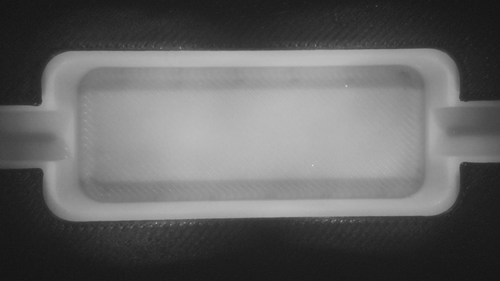
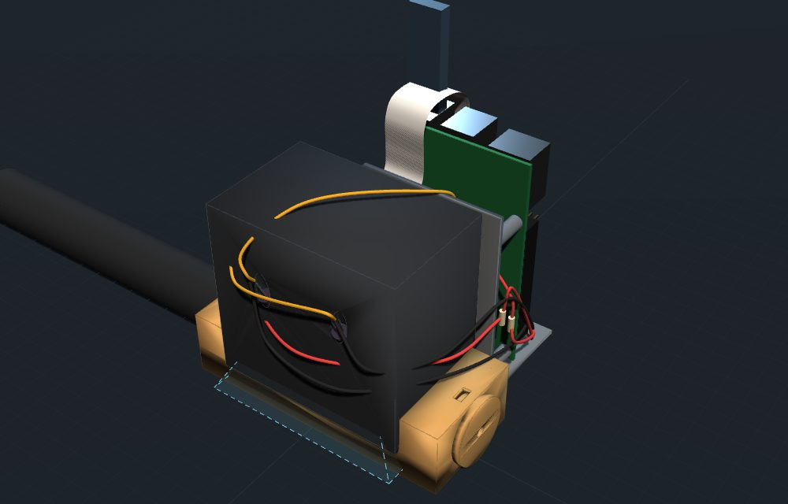

Camponotus nylanderi · diretta a infrarossi
Una regina, da sola, fonda una colonia.
Chiusa nella sua camera, senza mangiare, alleva le prime operaie con le sue riserve. Qui la segui giorno e notte, sotto una luce che lei non vede.

-
La colonia
Cosa sta succedendo là dentro
La Camponotus nylanderi fonda in modo claustrale. Dopo il volo nuziale la regina si chiude in una piccola cavità e non esce più. Per settimane vive delle sue riserve, comprese quelle dei muscoli delle ali che non userà più, e con quelle nutre le prime larve.
Per questo non le diamo cibo e non apriamo il nido: ogni disturbo può farle mangiare le uova. Le prime operaie, piccole e chiamate nanitiche, saranno loro a uscire a cercare cibo. Con il freddo dell'inverno tutto rallenta: è la diapausa, e la crescita riparte in primavera.
- FondazioneLa regina si chiude al buio. Niente cibo.
- UovaUn piccolo mucchio bianco che la regina tiene vicino a sé.
- LarveCrescono nutrite dalla regina.
- PupeBozzoli chiari: dentro si formano le operaie.
- Prime operaieLa colonia comincia a cercare cibo da sola.
Il nido
Stampato in 3D, ripreso al buio
Il nido è progettato su misura per questa specie e stampato in 3D. Una telecamera senza filtro infrarosso guarda dall'alto attraverso il plexiglass, mentre quattro LED a 940 nm illuminano la camera con una luce che le formiche non percepiscono. Un Raspberry Pi scatta il timelapse e trasmette la diretta.
| Camera di fondazione | 46 × 18 × 8 mm |
|---|---|
| Copertura | plexiglass colato da 3 mm |
| Acqua | provetta Ø 20 mm con cotone, collegata al nido |
| Telecamera | Raspberry Pi Camera v2 NoIR, a 66 mm dal pavimento |
| Luce | 4 LED infrarossi a 940 nm |
| Timelapse | una foto ogni 60 s, un video ogni notte |
| Diretta | 1280 × 720, 5 fotogrammi al secondo |
| Cervello | Raspberry Pi 3 B+ |

Diario
Giorno per giorno
I timelapse completi sono sul canale YouTube.
Domande
Domande frequenti
La luce non dà fastidio alle formiche?
No. I LED emettono a 940 nm, nel vicino infrarosso: è una lunghezza d'onda che le formiche non percepiscono, e nemmeno noi. Per loro la camera resta buia, come una cavità sotto la corteccia.
Perché l'immagine è in bianco e nero?
Sotto l'infrarosso non esistono colori: la telecamera vede solo quanta luce torna indietro. È lo stesso motivo per cui le telecamere di sorveglianza di notte sono in bianco e nero.
Perché la regina non mangia?
Nella fondazione claustrale la regina usa le riserve accumulate prima del volo nuziale. Darle cibo non serve e aprire il nido la disturberebbe. Il cibo arriverà con le prime operaie, in un'arena collegata al nido.
La diretta è sempre accesa?
Sì, giorno e notte. Ogni 11 ore la trasmissione si chiude e riparte, così ogni blocco resta salvato sul canale. Ogni notte viene montato anche un timelapse della giornata.
Quanto ci vorrà per vedere le prime operaie?
Con il caldo servono alcune settimane, dall'uovo all'operaia. Con l'inverno di mezzo la colonia rallenta molto: è probabile che le prime operaie arrivino in primavera.